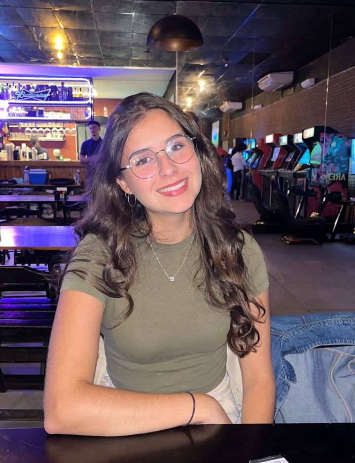

Projeto 1: Site Pessoal
Desenvolvimento de um site pessoal utilizando HTML e CSS.
Sempre aprendendo e buscando novos conhecimentos em tecnologia.
Meu nome é Beatriz Saldanha, moro em São Paulo e atualmente curso Análise e Desenvolvimento de Sistemas. Tenho muito interesse pela área de programação, principalmente pelo desenvolvimento Front-End. Gosto da parte visual dos projetos, como a criação de interfaces e a estilização das páginas, e pretendo me aprofundar cada vez mais nessa área. Estou sempre buscando aprender novas tecnologias e desenvolver minhas habilidades para crescer profissionalmente.

Desenvolvimento de um site pessoal utilizando HTML e CSS.
Desenvolvimento de um diagrama UML para um sistema de carrinho de compras, representando funcionalidades como adicionar e remover produtos, alterar quantidades e finalizar a compra, contribuindo para o planejamento e desenvolvimento da aplicação.
📚 Gosto de aprender novas tecnologias.
🎵 Gosto de ouvir música e jogar jogos no tempo livre.
🌱 Estou sempre buscando crescer profissionalmente.
Email: beatrizsaldanha95@gmail.com